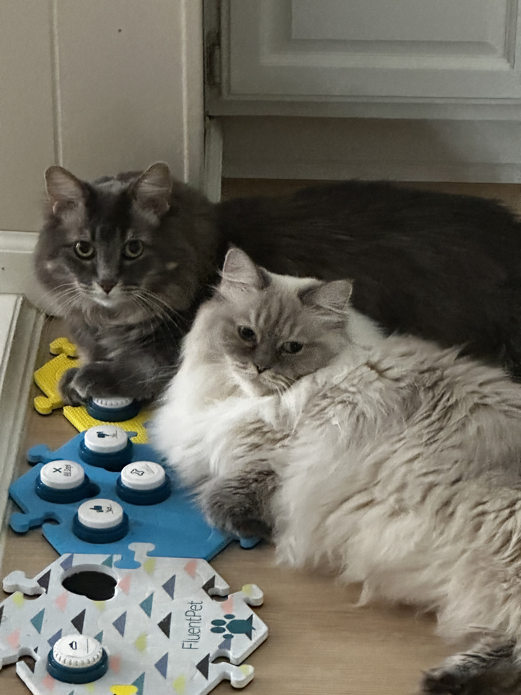

Everyone rise for her royal highness...
Here is the queen (See Figure 1).
She knows exactly how beautiful she is. Despite her appearance, she is an absolute goofball once you get to know her.
Drop everything and nap.
Behold her curious choice of furniture (See Figure 2).
Sleeping is one of her favorite hobbies.
She often can be found sleeping in strange places in the house. Additionally, she will often choose to stop in rather precarious locations — the middle of the stairs you are both walking down, behind doors of rooms you are leaving, even right behind where you are working in the kitchen.
What she has in good looks, unfortunately is not matched in survival instincts.
Other Favorites
This blue-eyed beauty does have some favorite things. (See Figure 3)
When she isn't sleeping or sitting around looking pretty, she can be found chasing mice around the house, carrying stuffed animals around in her mouth while loudly calling out for anyone to notice her.
Preferred stuffed animals include a blue crocheted axolotl, needle-felted mouse, and Ernie from "Sesame Street"
In the evenings, she is quite fond of watching Snoopy and Woodstock short cartoons on the AppleTV screensaver.
Siblings
She has an older brother (See Figure 4).
His name is Louie. He is the brains of the operation. They get along well until the evening hours set in, and shenanigans kick off with races around the house.
I hope you enjoyed meeting Juniper.
Did I mention Louie can talk with speech buttons?
